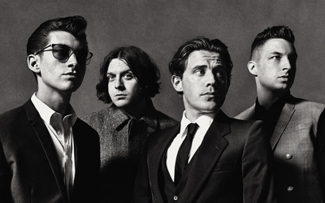
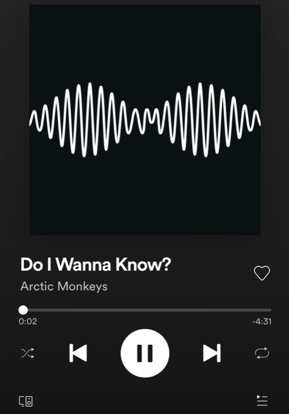
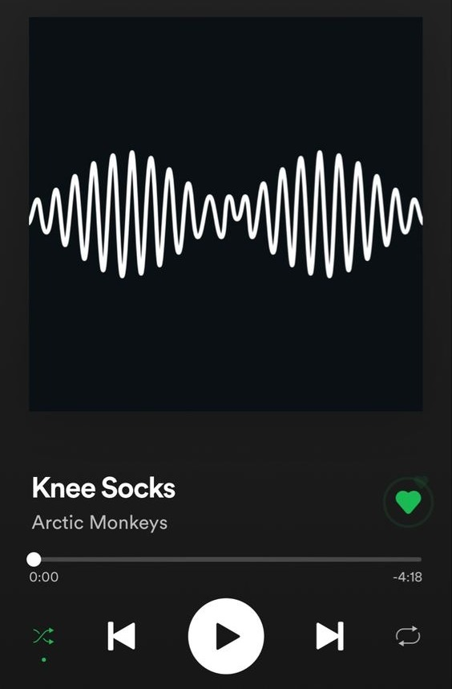
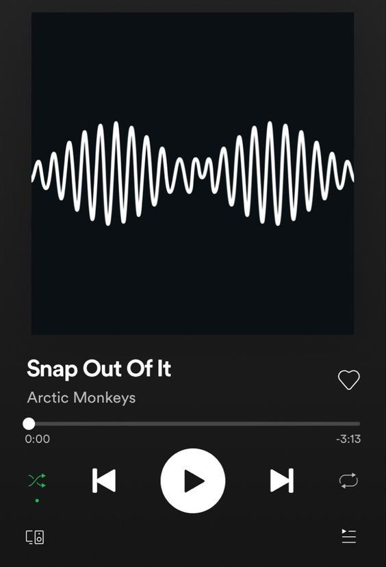
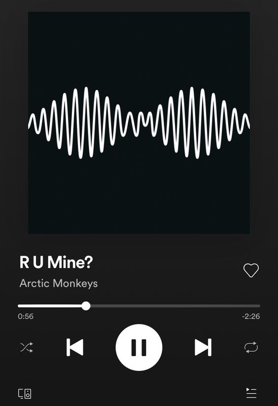
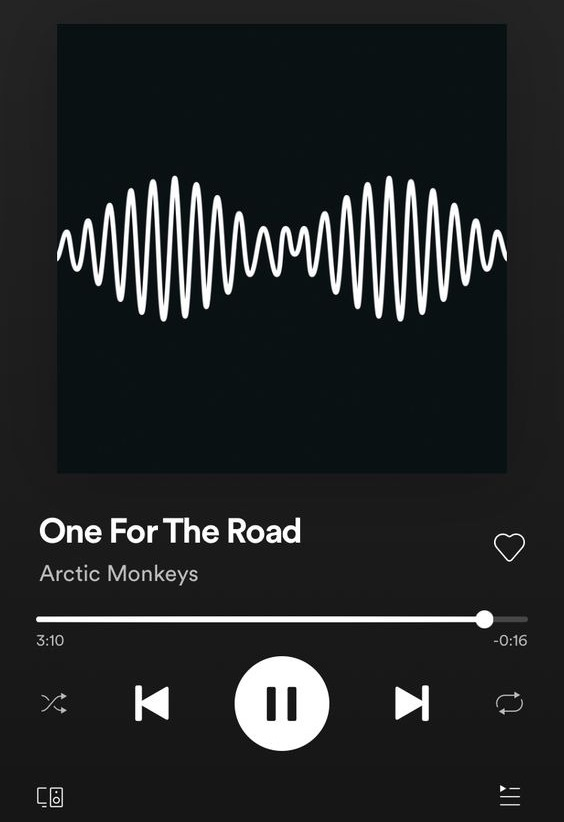

Arctic Monkeys

Arctic Monkeys, uma banda britânica de rock formada em 2002 nos subúrbios da cidade de Sheffield, na Inglaterra.
A banda é geralmente considerada parte da cena indie rock assim como as bandas contemporâneas The Libertines, The Futureheads e Franz Ferdinand. Atingiram o sucesso através de demos e compartilhamento de arquivos na web.
Os Arctic Monkeys alcançaram o sucesso com seu segundo single, "I Bet You Look Good on the Dancefloor", que alcançou o número um no UK Singles Chart. Seu álbum de estreia Whatever People Say I Am, That's What I'm Not, lançado em janeiro de 2006, tornou-se o álbum de estreia vendido mais rápido na história da música britânica, ultrapassando Definitely Maybe do Oasis e continua a ser o mais rápido vendido álbum de estreia de uma banda no Reino Unido, e tendo recebido elogios da crítica, vencendo o Mercury Prize 2006, o Brit Award for Best British Album em 2007 e eleito pela NME o 5º melhor álbum da música britânica.
Também foram nomeados para o Grammy de Melhor Álbum de Música Alternativa. O segundo álbum da banda, Favourite Worst Nightmare, foi lançado em 23 de abril de 2007, vendeu mais de 225.000 cópias em sua primeira semana, e foi nomeado para o Mercury Prize 2007. O grupo também recebeu o prémio de Melhor Álbum Britânico e Melhor Grupo Britânico, no Brit Awards 2008.
O seu terceiro álbum, Humbug, foi lançado em 24 de agosto de 2009. Suck It and See é o quarto álbum da banda e foi lançado no dia 6 de junho de 2011. Em 24 de junho de 2013, o Arctic Monkeys lançam o seu quinto álbum de estúdio, AM, a 9 de setembro de 2013.





Período em atividade: 2002 - atualmente
Gravadora(s): Domino Warner
Afiliação(ões): The Last Shadow Puppets Mongrel Reverend and the Makers The Dodgems The Rascals
Integrantes: Alex Turner Jamie Cook Nick O'Malley Matt Helders